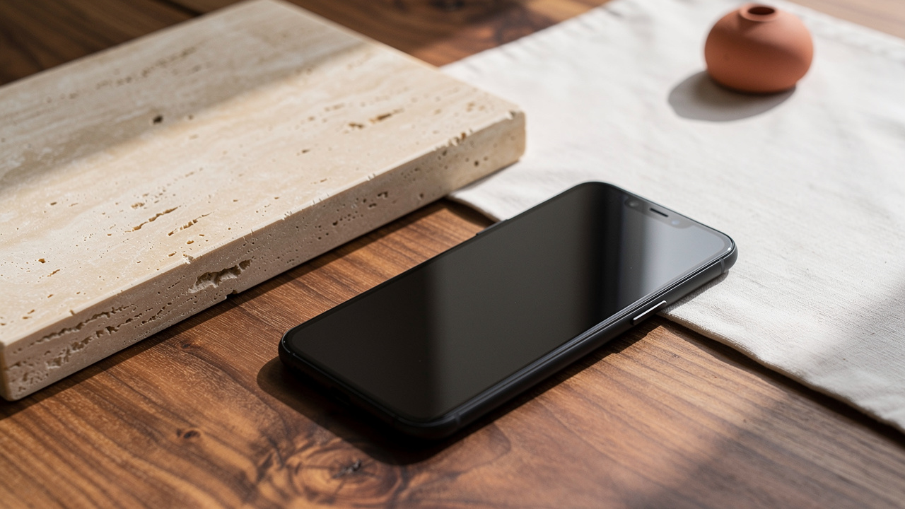

Palette de commandes rapide (Ctrl+K)
Accédez instantanément à n’importe quel écran, fil récent ou modèle grâce à une recherche tolérante aux accents et au raccourci clavier Ctrl+K dans une fenêtre protégée contre les captures.
Discutez, examinez des modifications de code, lancez plusieurs tâches en parallèle et façonnez votre espace sur téléphone ou tablette, relié à votre serveur Hermes multi-utilisateurs sans aucune télémétrie.
Fonctionne avec notre serveur compagnon LLM-4-People/hermes-agent pour l’hébergement multi-profils /p/<profil>, les tâches simultanées, la personnalisation en direct, l’espace Cerveau et les alertes privées.

Parcourez des écrans authentiques capturés sur téléphone et tablette lors des vérifications automatisées.

Pensé pour rester simple au quotidien tout en offrant une architecture rigoureuse aux utilisateurs exigeants et aux foyers multi-profils.
Accédez instantanément à n’importe quel écran, fil récent ou modèle grâce à une recherche tolérante aux accents et au raccourci clavier Ctrl+K dans une fenêtre protégée contre les captures.
Démarrez plus vite grâce à 6 modèles quotidiens (résumer une photo ou un reçu, rédiger une réponse, planifier sa journée, expliquer du code, comparer des lieux, créer un widget) ainsi que vos propres modèles chiffrés par profil, toujours placés en brouillon modifiable.
Exécute 6 vérifications parallèles (latence serveur, 51/51 fonctions du serveur compagnon avec alerte serveur standard, notifications, mises à jour, accès ambiant et langue) avec boutons de correction et copie d’un rapport expurgé.
Lancez plusieurs tâches en parallèle dans des discussions distinctes sans interrompre les flux en cours ni mélanger les réponses, sur un seul serveur HTTPS (/p/<profil>).
Ouverture immédiate des fils avec chargement progressif de l’historique, regroupement fluide des réponses en continu, vues personnalisées sans surcharge mémoire et purge automatique des caches au verrouillage.
Chiffrement local AES-GCM par profil, temporisation persistante contre les essais répétés de phrase secrète, biométrie forte, effacement atomique et notifications en direct Android 16 indiquant le nombre de tâches actives.
Modifiez la mémoire, gérez vos notes intelligentes, validez des habitudes détectées après 3 répétitions, recherchez dans tout l’historique via FTS5, parcourez vos fichiers et partagez 7 types d’éléments entre utilisateurs du même serveur.
Adaptez vos écrans et épinglez des widgets d’accueil isolés par profil avec annulation complète, et mettez l’application à jour depuis GitHub avec contrôle SHA-256 et vérification stricte du certificat.
Chaque profil déverrouillé possède son propre stockage chiffré, son suivi des tâches actives, sa liste blanche ambiante et ses widgets. Au verrouillage ou au changement de profil, les caches d’images, boîtes de dialogue et rappels tardifs sont immédiatement purgés afin qu’aucune donnée ne circule entre utilisateurs.
Les alertes reçues application fermée via Firebase ou UnifiedPush auto-hébergé (ntfy + chiffrement Web Push RFC 8291) ne transportent que des métadonnées opaques : le contenu privé reste sur votre serveur jusqu’au déverrouillage.

Quatre emplacements dédiés prêts à accueillir les nouvelles captures françaises vérifiées sur Android 16 (API 36).